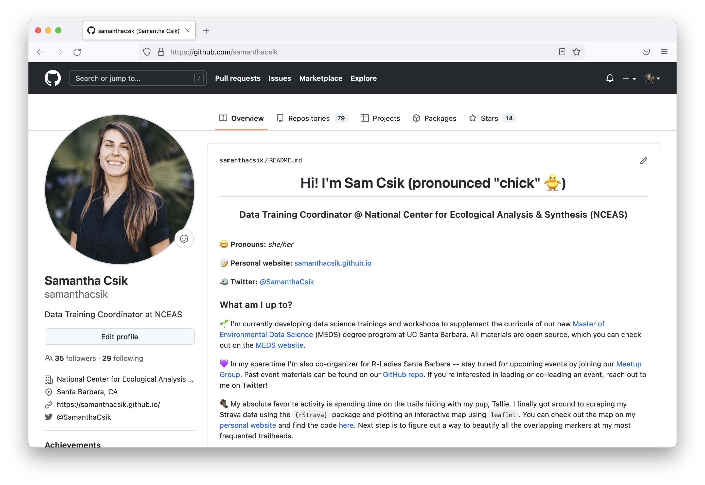
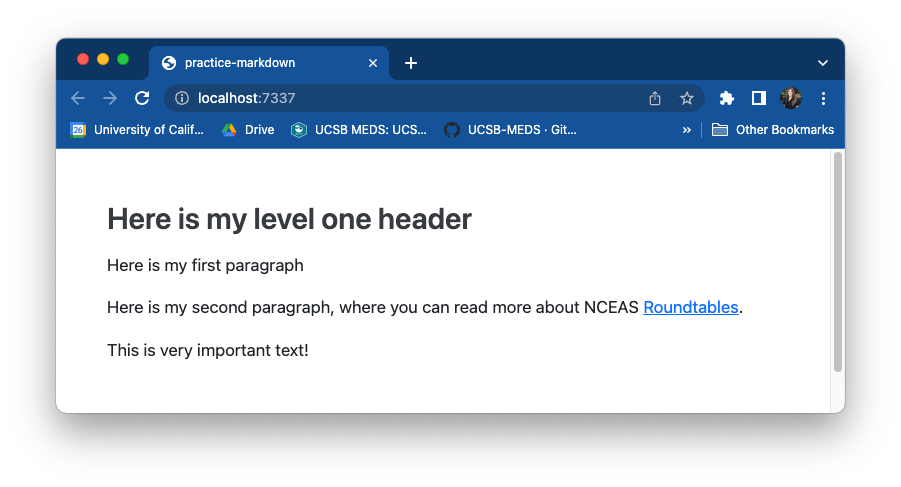
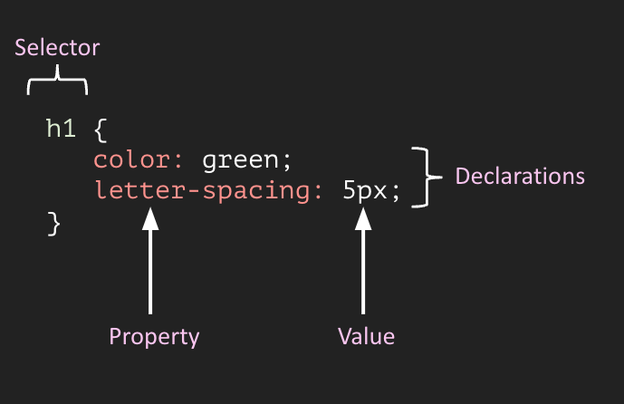
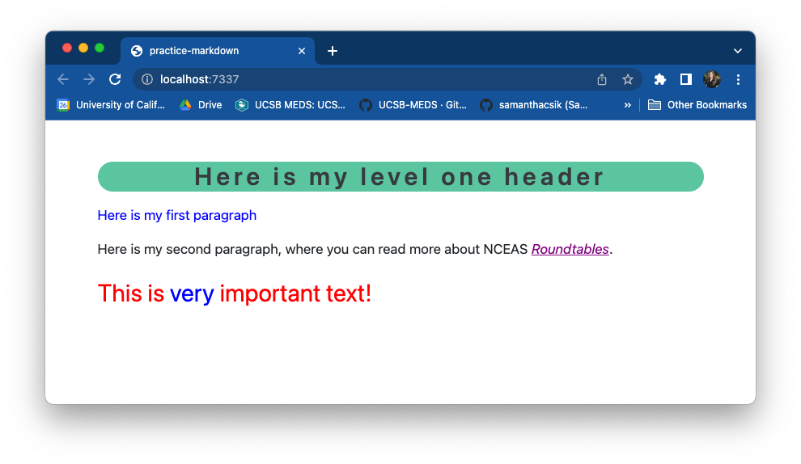

Until just a couple years ago, I really didn’t know anything about what goes into making a web page look the way it does…knowing even just a tiny bit now feels powerful and magical and fun.
So what’s a web page made up of?
HTML & CSS are the building blocks of web pages
HTML (Hypertext Markup Language) is a markup language that tells web browsers how to structure web pages. You can think of HTML as the skeleton of a web page. It gives authors the means to create elements like headings, text, tables, lists, add media, etc.
CSS (Cascading Style Sheets) is a programming language that allows you to control how HTML elements look on a web page. You can think of CSS as the outfit that is styling the skeleton. It allows authors to control aspects such as the colors, layout, and font style.
Your browser has its own internal stylesheet to render HTML
Your browser will style HTML documents using an internal style sheet, which ensures that headings are larger than normal text, links are highlighted, lists and tables are structured correctly, etc.
HTML
Browser default styling
CSS adds pizzazz to web page renderings
CSS allows website developers to add additional styling to web browser defaults. Otherwise, websites would be pretty boring to look at (and they’d all generally look the same).
Browser default styling

CSS styling
Keep in mind we need three things to style web pages:
HTML element(s)
These can be written in a number of file formats, including .html, .md, .rmd, and .qmd files
CSS rules
CSS can be written in a number of different places, but saving them to an external stylesheet is often preferred (e.g. .css, .scss, .sass files)
apply those CSS rules to your HTML elements
Link a stylesheet to the file where you’re HTML lives & apply styling as necessary
A light introduction to HTML
HTML consists of a series of elements
Elements comprise start tags and end tags that render some form of content in a particular way.
The basic anatomy of an HTML element:
In Markdown syntax, this HTML element would be written as: # Welcome to your website customization workshop
Note: Some HTML elements have no content (e.g. the <br>, or “break” element) – these are called empty elements and do not have an end tag.
an inline container used to markup part of a text or document
HTML elements can be nested
Remember to close out tags from the inside-out to avoid unexpected renderings.
Nested HTML elements:
In Markdown syntax, this HTML element would be written as: # Welcome to your **website customization** workshop
Important: Take extra care to never skip (or incorrectly type) an end tag! Some elements will still display correctly if you forget an end tag, but you cannot rely on this. Forgotten end tags will cause you headaches as you try troubleshoot unexpected results and errors .
HTML attributes can be used for targeted styling
Attributes provide extra information about elements. They are always specified in the start tag and usually come in value/name pairs (e.g. attributeName="attributeValue").
Attributes can be used for targeted styling with CSS (e.g. class attributes) – more on this soon!
To open in RStudio, click on the practice-html.html file in Files pane, then Open in Editor
<!DOCTYPE html><!-- All HTML docs start with a doc type declaration--><html><!-- This tag represents the root of the HTML doc --><head><!-- Write any metadata about the HTML doc here (inluding the link to an external CSS file) --></head><body><!-- Write all the contents of the HTML doc here --><h1>Here is my level one header</h1><p>Here is my first paragraph</p><p>Here is my second paragraph, where you can read more about NCEAS <ahref="https://www.nceas.ucsb.edu/roundtable">Roundtables</a>.</p><p>This is very important text!</p></body></html>
To open in RStudio, click on the practice-markdown.qmd file in Files pane
# Here is my level one headerHere is my first paragraphHere is my second paragraph, where you can read more about NCEAS [Roundtables](https://www.nceas.ucsb.edu/roundtable).This is very important text!
Click Render to render your .qmd file as HTML – it should open in RStudio’s Viewer pane and generate a practice-markdown.html file. Note: Quarto applies the default Bootstrap 5 theme to rendered markdown (giving it a bit of styling as compared to our HTML on the previous slide).

A light introduction to CSS
CSS is a rule-based language
CSS is a rule-based language – it allows you to define groups of styles that should be applied to particular elements or groups of elements on a web page. For example, “I want all level one (<h1>) headings to be green text with a bit of extra space between each letter” could be coded as:

We’re going to focus on element and class selectors, but check out these slides for an overview of other simple selectors. W3 Schools is also an excellent resource for learning about CSS selectors, exploring the many CSS properties, and much much more (I use this all the time!).
Any HTML element can be used as a selector. The declarations specified apply to all HTML elements of that type.
CSS
h1 {color: green;letter-spacing: 5px;}
HTML
<h1>My level one header will be styled</h1><h2>This level two header will not be styled</h2><p>Neither will this paragaph</p><h1>But this second level one header will be</h1>
Output
Group multiple element selectors together (separated by commas) if you want them all styled the same way.
CSS
h1, h2, p {text-align: center;color: purple;}
HTML
<h1>My level one header will be styled</h1><h2>This level two header will be styled</h2><h3>This level three header will not be styled</h3><p>This paragraph will be styled</p>
Output
Target an element(s) using class selectors
A class selector uses the class attribute of an HTML element to style that specific element. Class selectors are written using a . followed by the selector name, e.g. .selector. HTML elements can have more than one class, e.g. <p class="class1 class2">
<p>Only the word <spanclass="blue-italicized">blue</span> is styled.</p>
Output
Conflicting rules? The more specific rule wins
It is common to have more than one CSS rule that points to the same element. As you build more complex stylesheets, determining which CSS rule “wins out” can get complicated. At a very basic level, the more specific CSS “wins”. In the context of today’s talk, class selectors are more specific than element selectors and will take precedence.
/* ------- element selectors ------- *//* style level one headers */h1 {background-color: #49bf96;border-radius: 25px;letter-spacing: 5px;text-align: center;}/* purple italicized hyperlinks */a {color: purple;font-style: italic;}/* ------- class selectors ------- *//* blue text */.blue-text {color: blue;}/* large red text */.important-text{color: red;font-size: 30px;}
Below, we (a) link our stylesheet (line 5), and (b) use our class selectors to apply targeted styling (lines 10 & 12). These follow the general syntax:
<!DOCTYPE html><!-- All HTML docs start with a doc type declaration--><html><!-- This tag represents the root of the HTML doc --><head><!-- Write any metadata about the HTML doc here (inluding the link to an external CSS file) --><linkrel="stylesheet"href="practice-styles-KEY.css"></head><body><!-- Write all the contents of the HTML doc here --><h1>Here is my level one header</h1><pclass="blue-text">Here is my first paragraph</p><p>Here is my second paragraph, where you can read more about NCEAS <ahref="https://www.nceas.ucsb.edu/roundtable">Roundtables</a>.</p><pclass="important-text">This is <spanclass="blue-text">very</span> important text!</p></body></html>
Note the required /*-- scss:rules --*/ section header, which has been added at the top of the file
/*-- scss:rules --*//* ------- element selectors ------- *//* style level one headers */h1 {background-color: #49bf96;border-radius: 25px;letter-spacing: 5px;text-align: center;}/* purple italicized hyperlinks */a {color: purple;font-style: italic;}/* ------- class selectors ------- *//* blue text */.blue-text {color: blue;}/* large red text */.important-text{color: red;font-size: 30px;}
Below, we (a) call our stylesheet in the YAML metadata header using the theme option (line 2), and (b) use our class selectors to apply targeted styling (lines 7 & 11).
---theme: practice-styles.css---# Here is my level one header<pclass="blue-text">Here is my first paragraph</p>Here is my second paragraph, where you can read more about NCEAS [Roundtables](https://www.nceas.ucsb.edu/roundtable).<pclass="important-text">This is <spanclass="blue-text">very</span> important text!</p>
Note: Quarto also provides its own syntax for applying classes to elements. For example:
---theme: practice-styles.css---# Here is my level one header[Here is my first paragraph]{.blue-text}Here is my second paragraph, where you can read more about NCEAS [Roundtables](https://www.nceas.ucsb.edu/roundtable).[This is [very]{.blue-text} important text!]{.important-text}

How are we all feeling?
To me, writing a little CSS always feels a bit magical
Now it’s time to get a little y
Syntactically Awesome Stylesheets
Sass is a CSS extension (provides additional features, like variables)
Sass is a CSS preprocesser (converts Sass code into standard CSS because browsers can’t interpret Sass)
Sass helps to reduce repetition
Sass extends existing CSS features in a number of exciting ways, but importantly reduces repetition. For example, let’s say you’re working on a website/web page that uses three main colors:
You might imagine how often you’ll need to type those HEX codes out as you develop your stylesheet…it can get annoying rather quickly.
Define Sass variables to reduce repetition
Sass allows us to define variables (in the form $var-name: value;) for our colors to reference instead of writing out their HEX codes each time. This makes your stylesheet more readable and easier to update (e.g. only need to change HEX codes in one spot, not multiple!)
/* define Sass vars */$green: #348553;$yellow: #E9A300;$red: #A23601;/* use vars in CSS rules */h1 { font-color: $green;}.button-styling {background: $yellow;color: $red;border-color: $green;}
Note: Sass has two syntaxes – SCSS syntax (.scss), shown above, is the most common. It stands for Sassy Cascading Stylesheets
Quarto automatically compiles Sass
Recall: Web browsers can interpret CSS ( .css) but not Sass ( .scss or .sass). Typically, you’ll need to compile (aka convert) Sass to CSS, then link the resulting .css file in your HTML.
Lucky for us, Quarto compiles the contents of a .scss file into CSS without any extra steps – you may link a .scss file in the YAML of your .qmd file. For example:
---theme: practice-styles.scss---
From here on out, we’ll be writing our Sass variables and CSS rules in a .scss file, which we’ll use to style our fun/silly sample report.
We have a very important report in need to some styling
Create a .scss file in the report/ folder – you can do this using the touch command in the RStudio terminal (You may need to first cd (change directory) into this folder using the terminal, or manually move your .scss into the report/ folder after creating it):
touch practice-styles.scss
Add the /*-- scss:defaults --*/ and /*-- scss:rules --*/ region decorators to cuteness-report.scss (required by Quarto):
/*-- scss:defaults --*/// Sass variables will go here/*-- scss:rules --*/// CSS rules will go here
Apply your .scss stylesheet to your .qmd
Link my-report-styles.scss to your cuteness-report.qmd file using the theme option in the YAML (see lines 11-12):
---title: "Are dogs or cats cuter?"subtitle: "A very important report"author: "Sam Csik"date: "August 3, 2023"format: html: toc: true toc-location: left theme: - my-report-styles.scssexecute: eval: true echo: false message: false warning: false---
Define some color variables
Because this is NCEAS-funded research (jk jk, but let’s pretend), we’ll be using NCEAS colors to style our report. Define any colors you plan to use throughout your stylesheet using the syntax, $colorName: HEXcode;
/*-- scss:defaults --*/// colors$green: #348553;$light-green: #589244; $yellow: #E9A300;$red: #A23601;$white: #FFFFFF;$gray: #ADADAD;$black: #525452; /*-- scss:rules --*/// CSS rules will go here
Note: You won’t see new styling on your report just yet! We’ve defined some Sass variables here, but haven’t yet applied them.
Import Google fonts (1/2)
Start by exploring fonts at https://fonts.google.com/. Once you found a one (or more) that you like:
Select which weights and styles to import from the Styles section – click the + button, , to the right of the style you want.
Click on View selected families, (top right corner), to see all of your selected fonts. Under the Use on the web section, select the radio button for @import and copy everything between the <style> </style> tags (starting with @import and ending with ;) to your clipboard.
Import & define Google font variables (2/2)
Paste your import code into my-report-styles.scss, beneath /*-- scss:defaults --*/
Note:$font-family-sans-serif will automatically be applied across your Quarto document.
Specify additional variables
Note: All specified Sass variables could alternatively be written using CSS. However, this approach is quick, easy to write, and importantly, easy to read.
/*-- scss:defaults --*/// import fonts from fonts.google.com @importurl('https://fonts.googleapis.com/css2?family=Arvo&family=Nunito:wght@400;800&display=swap');// colors$green: #348553;$light-green: #589244; $yellow: #E9A300;$red: #A23601;$white: #FFFFFF;$gray: #ADADAD;$black: #525452; // font styles$font-family-sans-serif: 'Nunito', sans-serif;$font-family-serif: 'Arvo', serif; // find all Quarto Sass vars here: https://quarto.org/docs/output-formats/html-themes.html#sass-variables$font-size-root: 1.2em; $body-color: $black;$link-color: $red; $toc-color: $green; $toc-active-border: $yellow; $toc-inactive-border: $gray; $code-color: $light-green; $code-bg: $white;
Re-render to check out your new styling
Without my-report-styles.scss applied
With my-report-styles.scss applied
Next up: fine-tuning with some CSS
“Inspect”ing reveals how CSS is used to target HTML elements
Temporarily “edit” CSS selectors (refreshing your browser will revert your page back to its original state) – helps to identify exactly which elements different selectors are manipulating and allows you to try out styles before actually hard-coding them.
Start with element selectors (at least, I like to)
The following CSS rules apply styling to level 2 & 3 headers (inspecting the page helped me test these out first!):
Level 2 headers (<h2>/##):
colored green
section underlined in yellow
serif font (Arvo)
Level 3 headers (<h3>/###):
colored green
Note: we’re now writing our rules beneath the /*--- scss:rules ---*/ region decorator.
/*-- scss:defaults --*/// import fonts from fonts.google.com @importurl('https://fonts.googleapis.com/css2?family=Arvo&family=Nunito:wght@400;800&display=swap');// colors$green: #348553;$light-green: #589244; $yellow: #E9A300;$red: #A23601;$white: #FFFFFF;$gray: #ADADAD;$black: #525452; // font styles$font-family-sans-serif: 'Nunito', sans-serif;$font-family-serif: 'Arvo', serif; // find all Quarto Sass vars here: https://quarto.org/docs/output-formats/html-themes.html#sass-variables$font-size-root: 1.2em; $body-color: $black;$link-color: $red; $toc-color: $green; $toc-active-border: $yellow; $toc-inactive-border: $gray; $code-color: $light-green; $code-bg: $white;/*-- scss:rules --*/// level two stylingh2 { color: $green;border-bottom: 3pxsolid $yellow;font-family: $font-family-serif;}// level three styingh3 {color: $green;}
Modify existing class selectors
Inspecting reveals the existing class selectors (already defined by the Quarto framework), .title and .lead, which are used to target the document title and subtitle, respectively. We can modify what these do by including them in our stylesheet. I’ll make the following updates:
Document title (targeted with .title class):
colored green
serif font (Arvo)
increase font size
Document subtitle (targeted with .lead class):
increase font size
/*-- scss:defaults --*/// import fonts from fonts.google.com @importurl('https://fonts.googleapis.com/css2?family=Arvo&family=Nunito:wght@400;800&display=swap');// colors$green: #348553;$light-green: #589244; $yellow: #E9A300;$red: #A23601;$white: #FFFFFF;$gray: #ADADAD;$black: #525452; // font styles$font-family-sans-serif: 'Nunito', sans-serif;$font-family-serif: 'Arvo', serif; // find all Quarto Sass vars here: https://quarto.org/docs/output-formats/html-themes.html#sass-variables$font-size-root: 1.2em; $body-color: $black;$link-color: $red; $toc-color: $green; $toc-active-border: $yellow; $toc-inactive-border: $gray; $code-color: $light-green; $code-bg: $white;/*-- scss:rules --*/// level two stylingh2 { color: $green;border-bottom: 3pxsolid $yellow;font-family: $font-family-serif;}// level three styingh3 {color: $green;}// style document title .title {color: $green;font-family: $font-family-serif;font-size: 2.3rem;}// adjust size of documment subtitle.lead {font-size: 1.5rem;}
Create new class selectors
Let’s say we want to better highlight the very last sentence of our report, which links out to our GitHub repo & provides instructions for contributing:
We can create three new classes that:
increase the size of the text (.large-text)
center the text (.center-text)
color/style the background of our text to make it stand out (.highlight-text)
/*-- scss:defaults --*/// import fonts from fonts.google.com @importurl('https://fonts.googleapis.com/css2?family=Arvo&family=Nunito:wght@400;800&display=swap');// colors$green: #348553;$light-green: #589244; $yellow: #E9A300;$red: #A23601;$white: #FFFFFF;$gray: #ADADAD;$black: #525452; // font styles$font-family-sans-serif: 'Nunito', sans-serif;$font-family-serif: 'Arvo', serif; // find all Quarto Sass vars here: https://quarto.org/docs/output-formats/html-themes.html#sass-variables$font-size-root: 1.2em; $body-color: $black;$link-color: $red; $toc-color: $green; $toc-active-border: $yellow; $toc-inactive-border: $gray; $code-color: $light-green; $code-bg: $white;/*-- scss:rules --*/// level two stylingh2 { color: $green;border-bottom: 3pxsolid $yellow;font-family: $font-family-serif;}// level three styingh3 {color: $green;}// style document title .title {color: $green;font-family: $font-family-serif;font-size: 2.3rem;}// adjust size of documment subtitle.lead {font-size: 1.5rem;}// center text.center-text { text-align: center;}.large-text {font-size: 1.4rem;}// yellow highlight.highlight-text {background-color: rgba(233,163,0,0.2);padding-top: 5px;padding-bottom: 5px;padding-right: 5px;padding-left: 8px;border-radius: 25px;}
Apply new class selectors
Now that we’ve written our class selectors, we need to apply them to the HTML elements we want to style (recall, HTML elements can have more than one class):
<pclass="large-text highlight-text center-text">Explore our analysis on [{{< fa brands github >}} GitHub](https://github.com/samanthacsik/cute-cats-dogs). If you have suggestions on how to improve this report, please [file an issue](https://github.com/samanthacsik/cute-cats-dogs/issues).</p>
which will render as:
Check out your final styled document!
Styling webpages can be challenging. Here are some tips!
^ I feel this way often when trying to write CSS
For me, it’s a lot of it is trial and error. Inspecting your website can take patience and persistence to figure out how exactly to target your desired element. Some things that have helped me:
re-rendering often to ensure your Sass/CSS is working as expected
Google! (lots of queries that look like, “CSS underline text”, “CSS rounded corners”, etc.)
W3 Schools – seriously such a valuable resource (especially their interactive tutorials)
drawing inspiration (and borrowing source code) from other webpages